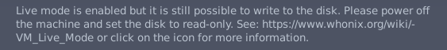
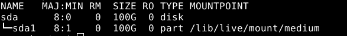

You may refer to my answer below in this post.
Could you please [EDIT] (button in the wiki) the wiki?
Sure I will do it soon.
This only worked for gateway but for workstation it is showing
AHCI: Failed to attach drive to Port0 (VERR_PDM_CFG_MISSING_DRIVER_NAME).
| Result Code: | E_FAIL (0x80004005) |
|---|---|
| Component: | ConsoleWrap |
| Interface: | IConsole {872da645-4a9b-1727-bee2-5585105b9eed} |
Did you apply this change for both gateway and workstation?
Also I am not sure it’s really optiomal to change back to lsilogicsas. In the past, Whonix deliberately moved from lsilogicsas to AHCI.
Quote Failed to open a session for the virtual machine
Failed to open a session for the virtual machine[edit]
If you see the following error message:
Failed to open a session for the virtual machine Whonix-Gateway-XFCE
If
Result Code:NS_ERROR_FAILURE (0x80004005)is shown, then this chapter applies.This occurs with all Whonix ™ VirtualBox versions up to version
15.0.1.7.2when using VirtualBox version6.1.20. VirtualBox version6.1.20solution:
VirtualBox→Settings→Storage→Type:AHCI→OK[6]- Other settings remain unchanged.
This setting is the default in Whonix ™ version
15.0.1.7.3and above (Point Release).Note this setting might cause High Disk Usage Causing Filesystem Corruption on some (slower) hardware configurations due to a VirtualBox host software bug, High I/O causing filesystem corruption
. This is speculation and unavoidable because there is no other solution at present. The High Disk Usage Causing Filesystem Corruption chapter has approaches which might fix this issue if it manifests.
To avoid issues like
Failed to open a session for the virtual machinein the future, use the the recommended version of the VirtualBox host software and Stay Tuned.Forum discussion: Whonix ™ VirtualBox - failed to start - NS_ERROR_FAILURE (0x80004005) - The VM session was aborted.
VirtualBox upstream bug report: VM Machine wont to start after upgrade to 6.1.20
Chapter https://www.whonix.org/wiki/VM_Live_Mode/ro-mode-init#Read-only_disk_on_VirtualBox is probably still from the time when Whonix was using lsilogicsas by default.
The real solution would be figuring out how to set read-only mode for VirtualBox harddrives with AHCI disk controller.
In other words…
lsilogicsas version:
VBoxManage setextradata vmname "VBoxInternal/Devices/lsilogicsas/0/LUN#0/AttachedDriver/Config/ReadOnly" 1
AHCI version:
?
1 Like
So is the AHCI Version
VBoxManage setextradata vmname “VBoxInternal/Devices/ahci/0/LUN#0/AttachedDriver/Config/ReadOnly” 1
1 Like
This warning still remains

Yes I did try it before, which indeed led to a successful start-up of the virtual machine, while the alert in Whonix, which says that the disk can still be written, still turned out to remain. I did not test whether the disk was actually able to be written and it might then be fault of check mechanism of disk properties run by Whonix. I reckon that the developers should go through that part of the code.
The Disk is not writable anymore thanks for the help
Then y’all guys may check the code related to mechanism of indication of writability of the disk
Great!
Is this tested?
- VM Live Mode
- VM Live Mode/Immutable Disk Method on VirtualBox
- VM Live Mode/Read Only Mode Hard Drive
- VM Live Mode/ro-mode-init
Check https://www.kicksecure.com/wiki/VM_Live_Mode#Technical_Details.
(As per https://www.whonix.org/wiki/Free_Support_Principle.)
I have given a shot with the type of storage device controller set to “AHCI” and the changed command executed. Although the result of lsblk showed that the read-only mode was off(ro = 0 for all columns), I attempted to create a folder and a file under /home, which was chosen randomly, only to have found them two disappearing after restarting. I think imma take further tests.
Are you aware that above AHCI is the syntax, not the command?
Did you add VM names to that command?
That’s the case even without read-only hard drive mode.
This is the root cause for live mode indicator.
Yes, so now I realise that the changed command:
VBoxManage setextradata Whonix-Gateway-XFCE “VBoxInternal/Devices/ahci/0/LUN#0/AttachedDriver/Config/ReadOnly” 1
is not working as expected to set the disk to the read-only mode. I always chose the LIVE mode on the GRUB menu, which has for the line calling linux one parameter “boot=live” that should be the reason why those two things disappeared.
Now by viewing the log of the virtual machine, I did find the method to set the disk into read-only mode under the controller of AHCI; however, it does not seem to be really viable, because an error message will be seen and the machine will be paused whenever there is an attempt to write to the disk. (Plus, ro is still equal to 0 here)
The syntax is:
VBoxManage setextradata [vm-name] “VBoxInternal/Devices/ahci/0/LUN#0/Config/ReadOnly” 1
Then I don’t think there will be a valid and viable method to make it run in live mode with its disk not writable when using the AHCI controller.
The command
VBoxManage setextradata [vm-name] “VBoxInternal/Devices/ahci/0/LUN#0/Config/ReadOnly” 1
is not changing the disk to read only when i tried it and tested the command
sudo lsblk --all it showed

1 Like
Yes, as I’ve said, ro is still 0 under this property set, while the machine will be paused and give out a warning that the disk is being written whenever written. I don’t think there is an acceptable solution under the AHCI storage controller.
Is there any alternative method